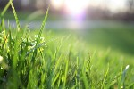

Fish Haven

Weather Summary
Currently:
High: °F
Wind Chill: °F
Humidity: %
Wind Speed: mph
Five Day Forecast
: ° F
: ° F
: ° F
: ° F
: ° F
Events
April 1: How Big Was That Fish Day
May 15-30: Rush the Creek Days
July 24: Bear Lake Blunder Run
December 12: Light the Tree
Sustainable Agriculture
Sustainable agriculture takes many forms, but at its core is a rejection of the industrial approach to food production developed during the 20th century. This system, with its reliance on monoculture, mechanization, chemical pesticides and fertilizers, biotechnology, and government subsidies, has made food abundant and affordable. However, the ecological and social price have been steep: erosion, depleted and contaminated soil and water resources, loss of biodiversity, deforestation, labor abuses, and the decline of the family farm.
The concept of sustainable agriculture embraces a wide range of techniques, including organic, free-range, low-input, holistic, and biodynamic.
Ecologically Beneficial
The common thread among these methods is an embrace of farming practices that mimic natural ecological processes. Farmers minimize tilling and water use, encourage healthy soil by planting fields with different crops year after year and integrating croplands with livestock grazing, and avoid pesticide use by nurturing the presence of organisms that control crop-destroying pests. Beyond growing food, the philosophy of sustainability also espouses broader principles that support the just treatment of farm workers and food pricing that provides the farmer with a livable income.
Overcoming Challenges
Critics of sustainable agriculture claim, among other things, that its methods result in lower crop yields and higher land use. They add that a wholesale commitment to its practices will mean inevitable food shortages for a world population expected to exceed 8 billion by the year 2030. With increased efficiency of sustainably farmed lands, advocates hold that sustainably farmed lands may be as productive as conventionally farmed ones.